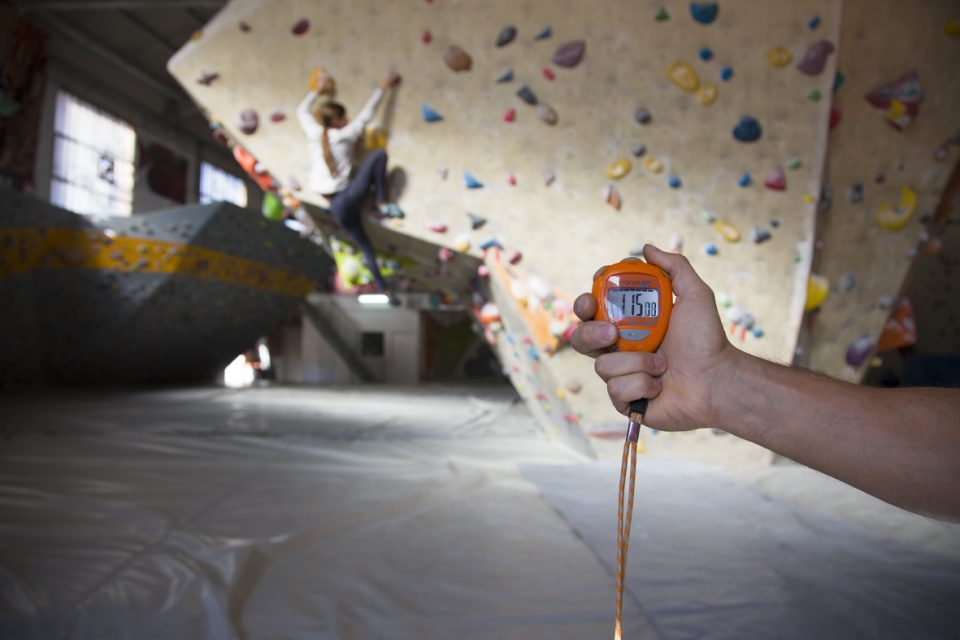

Jesús Muñoz ‘Chuchi’ hace la primera repetición de ‘El dorado’ 9a con “alegría, satisfacción… y alivio”
Por Antxon Eguiguren - 05/11/2019
El escalador salmantino encadena su vía más dura, después de años dedicado prácticamente en exclusiva al bloque. Hablamos con él acerca de esta línea de La Pedriza y de su práctica escaladora en general.
La segunda temporada de la serie de vídeos de entrenamiento para escalada The Process, presentada por el escalador Robbie Phillips, se centra en los aspectos mentales. El primer capítulo está dedicado a uno de los factores que más bloquean a los escaladores a la hora de progresar y mejorar: el miedo a las caídas.
Entrenamiento para escalada: pautas para alcanzar tus objetivos
Por Antxon Eguiguren - 05/11/2019

En este artículo el entrenador Marco Jubes define los aspectos fundamentales para trabajar a lo largo del año en función de los objetivos propuestos, bien en roca o en competición. Se dirige sobre todo a los entrenadores que tengan a su cargo a un grupo de alumnos, si bien también puede ser de utilidad para los escaladores individuales.
5 Consejos Esenciales de Iniciación al Entrenamiento Ciclista
Por Antxon Eguiguren - 05/11/2019
Conseguiremos mejorar y nos engancharemos más a la bici e igual conseguimos hacer sufrir a nuestros compañeros de grupeta. Debemos adaptarnos a nuestro nivel y de ahí ir progresando. Agradecemos a todos los que nos habéis propuesto hacer este video en los comentarios, como por ejemplo a Mr Eminem. Asi que, aqui lo teneis y no dudéis en dejarnos vuestras dudas sobre este video y hacernos más propuestas!
Cuatro meses y medio después de sufrir un grave accidente mientras reconocía el circuito de la contrarreloj del Criterium du Dauphiné -que le provocó numerosas fracturas de fémur, cadera, costillas y codo, además de una lesión en el cuello- el británico Chris Froome volvió a vestirse ayer domingo con el maillot del Team Ineos para participar en la contrarreloj por equipos -de 3,1 km- del Criteium de Saitama (Japón), no competitivo.